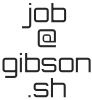

My previous employer pivoted to “AI” too hard, so I’m looking for a new job as a software developer (not LLM micromanager).
I’ve been working as professional software developer for around 15 years now. I’m a generalist, but my career so far was a bit biased towards:
- Development on and for Linux
- Cross-platform development
- Game development
- Backend
- C and C++
I have also developed for Windows, I’m fluent in Python, have a little experience with Go and long ago I’ve used Java and Clojure. I am generally able to learn new things quickly.
Apart from writing code I’m pretty good at debugging problems, down to the kernel if necessary and either fix them or report them in a way that makes it as easy as possible for the project’s developers to reproduce and fix the issue.
I’d like to work either fully remote or partly remote in/around Hamburg (Germany).
Some topics or fields I’d be interested in for future jobs:
- Open Source
- Digital Sovereignty
- Sustainability
- Embedded Systems
I’m of course also open for other things, but I’d like my job to be halfway ethical (no arms industry, generative AI, user-tracking online ads, gambling, surveillance, …).
CV
This is a rough CV that avoids most personal details, get in touch for the full version.
I was born in the mid-1980s in Northern Germany.
In 2005 I started studying Computer Science at Marburg University.
My specialization areas were operating systems and networks and databases.
In some semesters I worked as a student assistant giving tutorials for a database lecture.
In 2008 I interned at a company that developed a Datastream Management System (aka “Complex Event Processing solution”). There I successfully designed and implemented an automated testing environment for their software.
In 2011 I finished University with a Master of Science in Computer Science.
After graduating I worked as a backend developer for a company that developed Linux-based hardware firewalls. My tasks there included:
- Implementing and maintaining DNS- and Web-Proxy components (using Clojure and C/C++)
- Fixing bugs in all components, especially related to generating iptables rules
- Establishing an automated integration test framework for the firewall (in Python and using both virtual and real machines)
- Training new colleagues on the codebase and technologies used
From 2014 to 2026 I worked at a company that developed a computer game and afterwards did contract work outside of games. Some things I did at that job:
- For the game (Cattle and Crops):
- Extended many parts of the game engine we used (C4), ensured Cross-Platform support (Windows and Linux)
- Support for input with gamepads, joysticks and steering wheels
- Implemented lots of gameplay features (with C++), including navigation and behavior of NPC vehicles
- Coached other developers in the team
- Extensive Performance Optimizations
- One industry contract was an Unreal-Engine based 3D training simulator, my tasks included:
- Implementing Unreal Engine 4 & 5 C++ plugins to stream regular Windows and Linux applications into virtual screens of a 3D simulation, both on Windows (only Windows application) and Linux (there both applications, one run with Wine)
- Developing a solution to bridge a virtual CAN bus over a TCP/IP network, between CANoe, our Unreal-Engine-based simulator and the aforementioned applications
- Investigating and reporting GPU driver bugs in a way that allowed the vendors to reproduce and fix them relatively easily
- Other industry contracts involved:
- Web services written in Python with FastAPI and SQLAlchemy+SQLModel
- A little bit of web frontend work with Python+NiceGUI
- Converting InDesign documents to Markdown
- I set up the company-internal server hosting Git and a bugtracker, as documented in this blogpost
Things I work(ed) on in my free time
Own projects or ones I contributed heavily to:
- dhewm3 - Source Port1 of Doom3 for various platforms: I took over maintenance in 2012, fixed lots of bugs and added new features over the years2.
- Yamagi Quake II - Quake 2 Source Port: Co-maintaining it, OpenGL3 renderer, SDL2-Port, lots of bugfixes
- Daikatana 1.3 - Unofficial Fan Patch for Daikatana: Ported it from Win32 + “Miles Sound System” to SDL2 + OpenAL for Linux and Mac, fixed bugs, helped a teammate learn C++ and Git
- texview - A small self-contained cross-platform texture viewer: Wrote it (using C++, GLFW, OpenGL and Dear ImGui), incl. a custom robust DDS texture parser+loader
- Keyboard Adaptor - My USB-to-USB Keyboard Adaptor with Arduino Hardware to make gaming keyboards work with finicky hardware like KVM switches. This also lead to small patches with improvements for the Arduino AVR core and USB Host Shield 2.0 Library projects.
- Snippets - Small libraries and such that I wrote
- My Blog (just in case you got directly to this page and haven’t seen the rest yet)
Some other projects I contributed to:
- SDL A cross-platform library for games and similar3: Bugfixes, heavily reworked the SDL_main system for SDL3
- OpenRGB - A tool to configure LED lighting of various devices: I reverse-engineered the USB-protocol used to configure my keyboard’s LEDs and contributed support for it to OpenRGB
- asustor-platform-driver - Linux kernel driver
for ASUSTOR NAS hardware: Support for more devices, refactorings, extended
it87SuperIO driver so blinking LEDs can be controlled4 - Linux Kernel
- Found, debugged and reported a nasty bug in pseudo-terminals, leading to a prompt fix.5
- Debugged and implemented workaround for a firmware bug in some Lenovo IdeaPad notebooks, see also my blogpost about it.
Get in touch
If you’d like to work with me me or know someone who does, or want to know more or if you have a suggestion for a job I should apply to, please contact me:

-
A “source port” is an open source version of a (usually old) computer game, based on the source code released by the original developers. Source ports usually make sure the game works well on modern hardware (widescreen displays, 64bit multicore CPUs, …) and operating systems, fix bugs and add features. ↩︎
-
Among others: proper widescreen support, a completely new configuration menu based on Dear ImGui, gamepad support, 64bit fixes, …
There is an extensive list; the dhewm3 newsposts for releases also have screenshots and short summaries. Related:- Ported several Doom3 mods and maintaining their source
- Restored a Doom3 modding community Wiki and preserved old official documentation that disappeared from the web
-
SDL provides a consistent API for common tasks like window handling, access to input devices, audio and more for lots of platforms including Windows, macOS, Linux, iOS, Android, *BSD, Haiku ↩︎
-
This was necessary to make an LED that starts blinking when turning on the device stop blinking when done booting ↩︎
-
“Thanks, great report.” - Linus Torvalds ↩︎